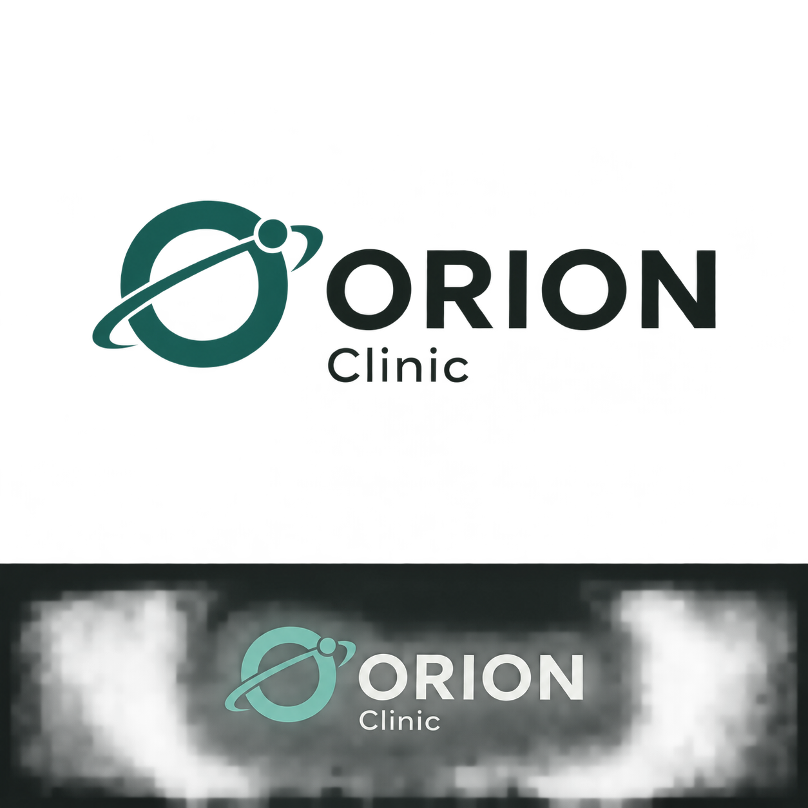
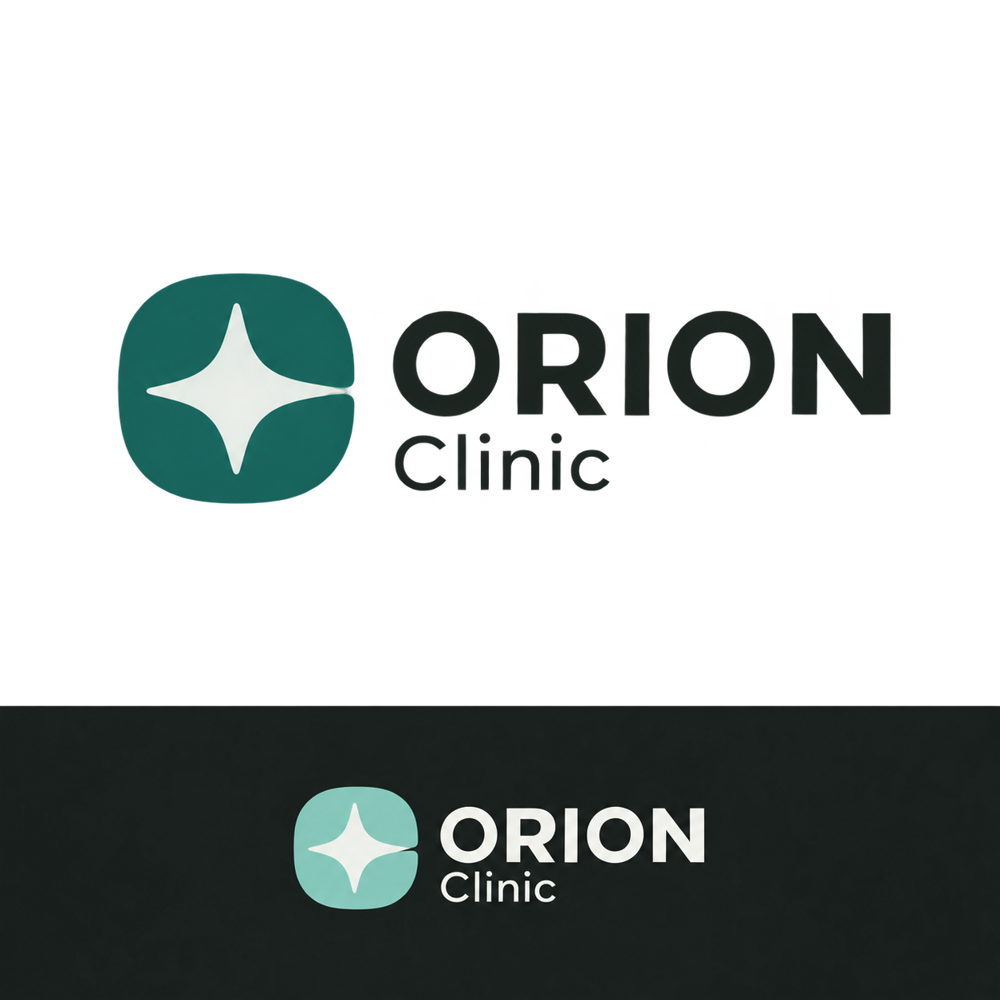
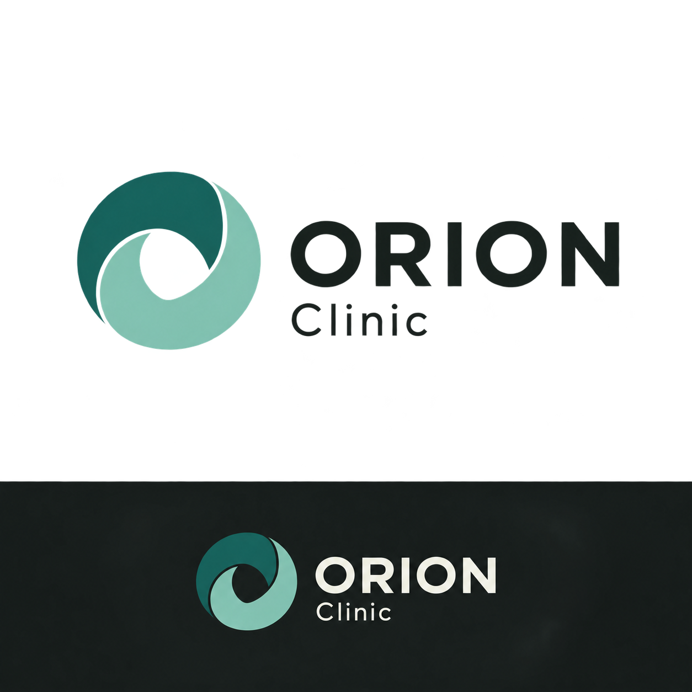
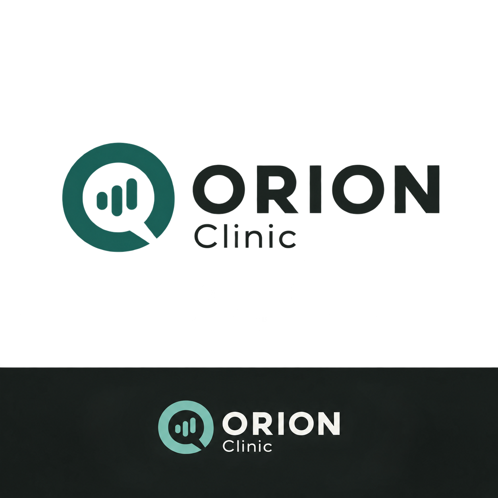
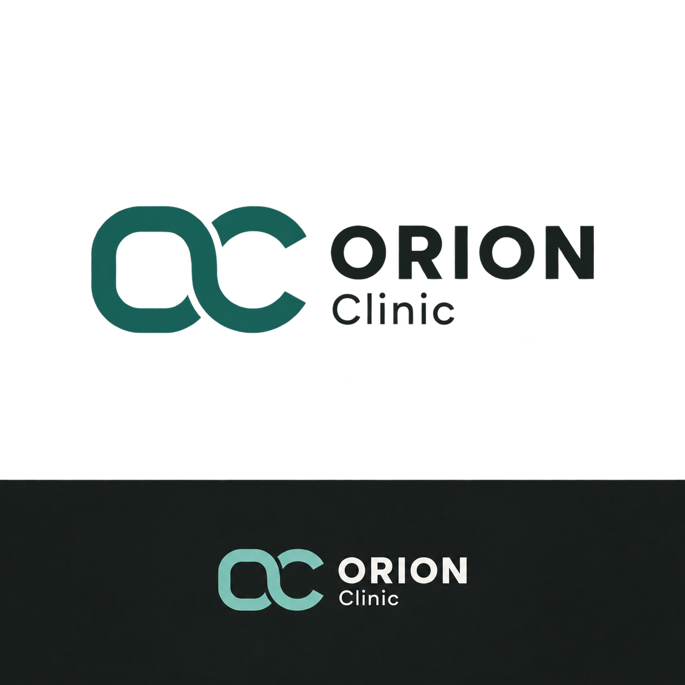

01Орбита
Связь с названием ORION, непрерывный маршрут пациента и скоординированная помощь.
ORION Clinic · Поиск фирменного знака
Одна палитра. Пять разных характеров.
Нажмите на вариант, чтобы открыть PNG в полном размере.

Связь с названием ORION, непрерывный маршрут пациента и скоординированная помощь.

Точность и понятное направление. Компактный знак для иконки приложения и навигации.

Две взаимодополняющие формы — врач и пациент. Более тёплый и человечный характер.

Разговор становится помощью. Прямая связь с очным приёмом и речевым ассистентом.

Сдержанный знак O + C. Более строгий, корпоративный образ клинической платформы.
Мой выбор
«Орбита» сильнее связана с именем проекта. «Кольцо заботы» мягче и ближе к пациентскому приложению.
После выбора — точная векторная геометрия, проверка малого размера, монохромная версия и иконка приложения.